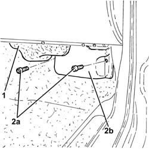
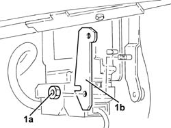
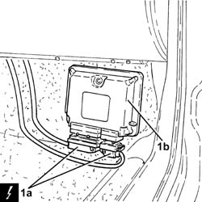

2127E10 HYDRAULIC SPEED SELECTION SYSTEM CONTROL UNIT - R R
- Path
- Procedures > 21 GEARBOX UNIT > 2127 HYDRAULIC TRANSMISSION EXTERNAL LINKAGE > 2127E ELECTRIC SPEED SELECTION SYSTEM > 2127E10 HYDRAULIC SPEED SELECTION SYSTEM CONTROL UNIT - R R
- Kind
- repair procedure (removal / refitting; the operation number is the code)
- Applies to
- engines: 2.0 JTS; all production periods; only with equipment: Smart gearbox
- Interactive page
- https://sloeber94.github.io/elrnDB-aGt/en/#/125001288
Applies to: engines: 2.0 JTS; all production periods
 Removing
Removing
 Refitting
Refitting- Make sure that the ignition key is in the OFF position, then disconnect the battery terminal (-).
Description | Connector | |
|---|---|---|
- | Battery | See A001 Battery |
- Remove the climate control fan guard.
- Undo the bolts (2a) and remove the protection (2b) for the electro-hydraulic selection gearbox system electronic control unit.

Applies to: engines: 2.0 JTS; all production periods
- Undo the nuts (1a) and remove the bracket (1b) securing the electro-hydraulic selection gearbox system electronic control unit.

Applies to: engines: 2.0 JTS; all production periods
- Disconnect the electrical connections (1a) and remove the electro-hydraulic selection gearbox electronic control unit (1b).
Description | Connector | |
|---|---|---|
1a | Selespeed gearbox control unit | See M54 SELESPEED TRANSMISSION CONTROL UNIT |

Applies to: engines: 2.0 JTS; all production periods
Refitting
Removing- Place the electronic control unit for the gearbox electro-hydraulic selection system back in its housing after having connected the electrical connections.
- Place the mounting bracket for the electro-hydraulic selection gearbox electronic control unit back in its housing and secure it using the bolts.
- Place the protection for the electro-hydraulic selection gearbox electronic control unit back in its housing and secure it using the bolts.
- Place the climate control fan guard back in its housing.
- Connect the negative battery terminal (-).
- Op. 2127E08 RUNNING THE HYDRAULIC SPEED SELECTION SYSTEM CONTROL UNIT SELF LEARNING PROCEDURE